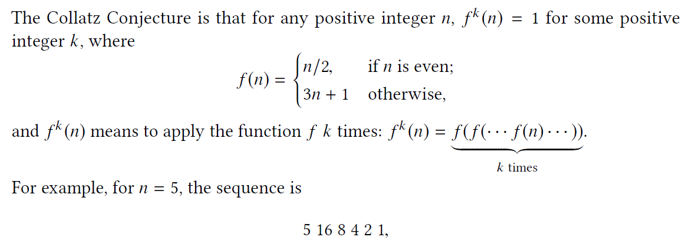
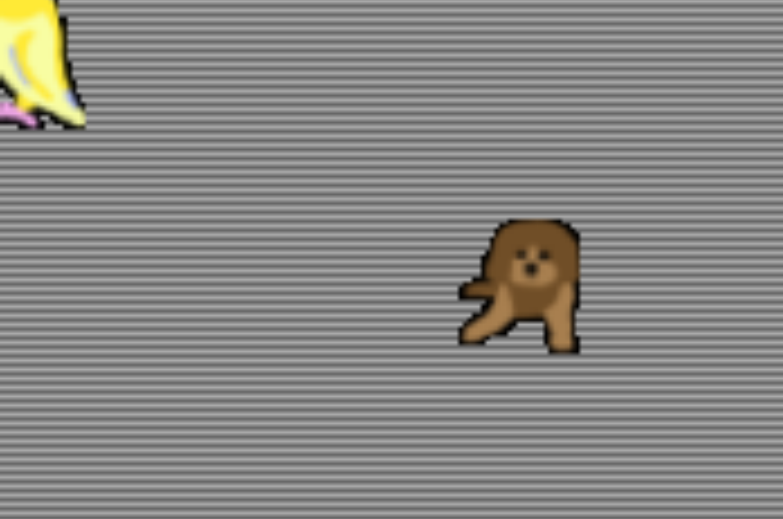

Embedded System
In this project, I was using DE1-SOC which integrates an ARM-based hard processor system (HPS) with the FPGA fabric. First, I implemented a Collatz Sequence calculator using only FPGA. Then, I made a simple bullet-dodging game combining software and hardware. I learned to program on SystemVerilog and config the board using Quartus, as well as modify Linux kernel and device driver to allow memory-mapped communication.
Part 1: Collatz Sequence Calculator
This is a practice of programming on FPGA and using onboard peripherals. I used switches and buttons as input. My hardware program records the number of iterations of input value reduced to 1, then showing on 7-segment displays. The first 3 digits are the input value, the last 3 digits are the output result, and both are in hex.
Part 2: A Simple Video Game
This part consists of making 640*480 VGA output on FPGA, the main game program on C, and data transfer between them. First thing is to make sure my device driver works properly:
The ball's position is controlled by software.
I wrote a script to encode small pictures into hardware, and implement sprite graphics using line buffer approach. I also made a debugger for VGA using Varilator that allows me to preview the output without compiling everything. Part of the preview frame is like this:
Different color of background showing odd and even line.
My final bullet dodging game: